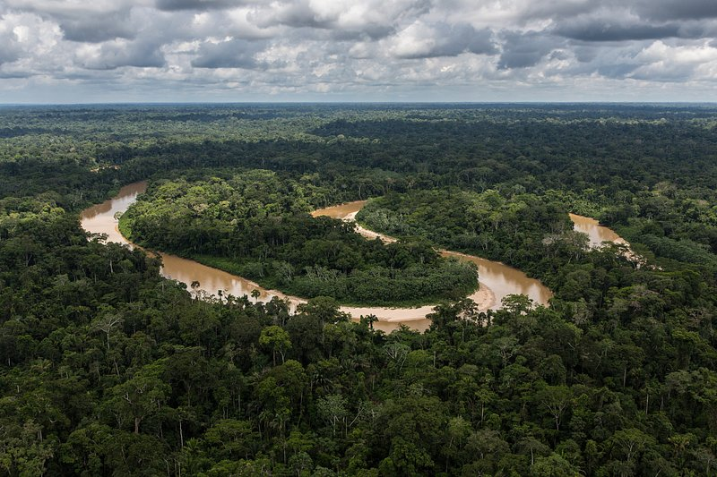
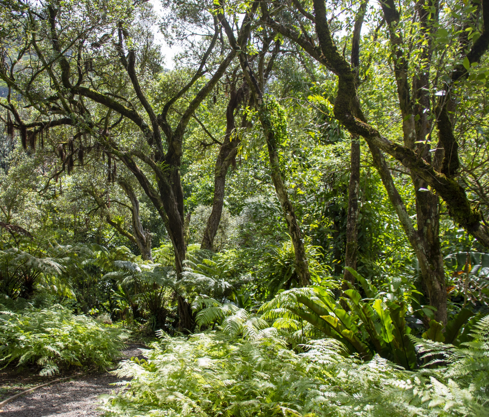
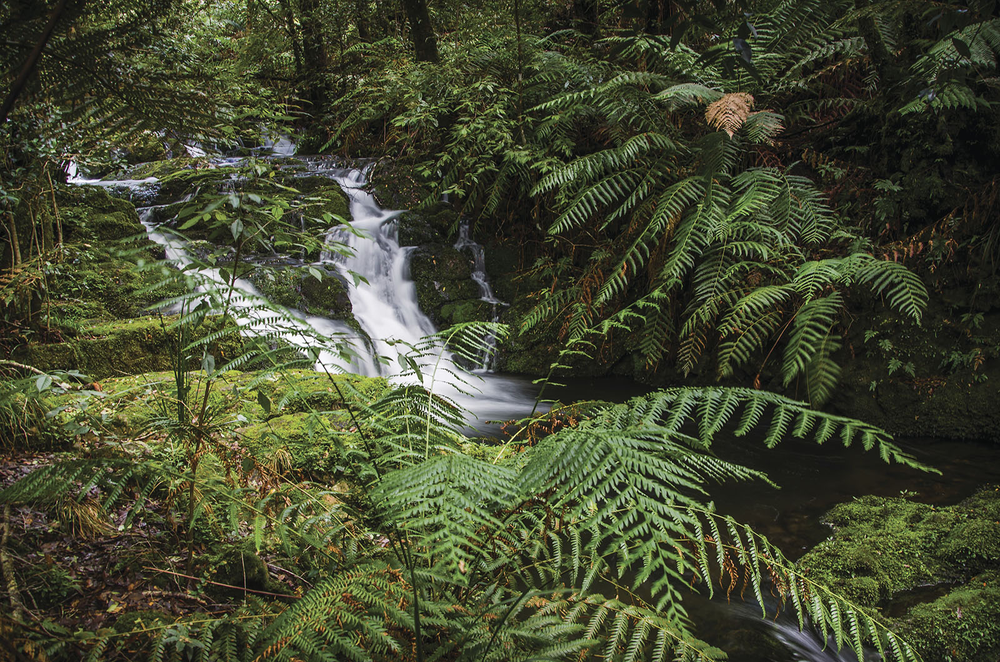
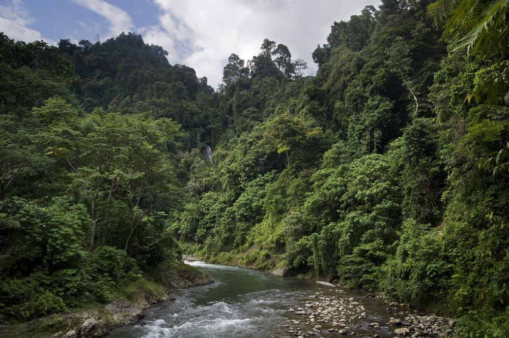

01
Az erdő mint világ
Földrajz, éghajlat és az erdő négy egymásra épülő szintje.
Ismerd meg az élőhelyet ↗Lépj be az esőerdők világába. Ismerd meg az élet szövevényét,
amely a bolygónk jövőjét is alakítja.
01 / Egy élő, összefüggő rendszer
Az esőerdő sokkal több sűrű növényzetnél: fajok, víz, talaj és éghajlat finoman hangolt hálózata. Ha egy szála sérül, az egész rendszermegérzi.
Válassz egy ösvényt — minden történet összekapcsolódik.Földrajz, éghajlat és az erdő négy egymásra épülő szintje.
Ismerd meg az élőhelyet ↗Különleges fajok és a köztük szövődő, gyakran láthatatlan kapcsolatok.
Találkozz a fajokkal ↗Miért számít egy távoli erdő sorsa, és holkezdődik a változás?
Lásd az összefüggéseket ↗02 / Esőerdő atlasz
A trópusi esőerdők főként az egyenlítő közelében élnek, meleg, csapadékos éghajlaton. Mérsékelt övi esőerdők is léteznek, például hűvös óceáni partvidékeken.

Dél-AmerikaHatalmas folyórendszerek és összefüggő erdők vidéke. Az erdő párologtatása a távoli csapadékot is befolyásolja.

AfrikaHatalmas folyórendszerek és összefüggő erdők vidéke. Az erdő párologtatása a távoli csapadékot is befolyásolja.

Borneó és SzumátraHatalmas folyórendszerek és összefüggő erdők vidéke. Az erdő párologtatása a távoli csapadékot is befolyásolja.
05 / több, mint egy távoli erdő

Vízfelvétel->
Párologtatás->
Csapadék
A fák vizet vesznek fel, majd leveleiken át párát juttatnak a levegőbe. Ez a nedvesség hozzájárul a felhők és az eső kialakulásához.
Az erdő növekedés közben szén dioxidot köt meg. A növényzet és a talaj szenet tárol; pusztulásukkal ennek egy része visszajut a légkörbe.
A változatos fajok és élőhelyek összetett kapcsolatrendszere segíti az erdő működését. Megőrzése az alkalmazkodóképességet is védi.
Az esőerdő nem egyszerűen „a Föld tüdeje . Jelentősége a szén , víz és élővilág rendszerek összekapcsolásában rejlik.
06 / több, mint egy távoli erdő
Az erdő feldarabolódása a megmaradt élőhelyeket is megváltoztatja.
Mezőgazdasági terjeszkedés, fakitermelés, bányászat és utak: az erdőirtás okai térségenként eltérnek, és gyakran összeadódnak.
A megmaradt erdőfoltok között nehezebb a fajok mozgása. A széleken a táj szárazabbá, sérülékenyebbé válhat.
A szárazabb időszakok és az ember által gyújtott tüzek egymást erősíthetik. A sérült erdő nehezebben áll helyre.
Ami valóban segít
A meglévő erdők védelme az első.
Ezt egészíti ki az őshonos élőhelyek
helyreállítása és az őslakos, helyi közösségek jogainak tisztelete.